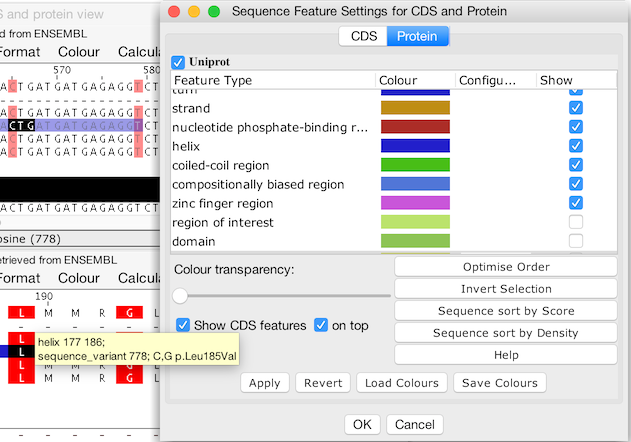

Split Frame Views
Jalview provides a special viewing mode to show Coding DNA (cDNA) and protein product alignments as a split view, with cDNA above and protein below. The two alignments are linked, allowing editing and analysis to be performed at both the peptide and nucleotide level. Linked protein alignments also have an additional cDNA Consensus annotation row, showing the distribution of codons at each column of the protein alignment.
Split Frame views can be created in a number of ways. In the Jalview Desktop, Split Frame views are saved in Jalview Projects, like any other alignment view.
Since Jalview 2.11.1, sequence features displayed in either CDS or Protein can be shown as 'Virtual Features' mapped onto the other view. Features describing non-synonymous genomic sequence variation in coding regions are dynamically translated when shown in the protein view.
The display of virtual features and whether they are rendered below or above features local to the aligned sequences is controlled by a check box shown in the view's Sequence Feature Settings dialog box. For convenience, Protein and CDS feature settings for a linked CDS/Protein view are shown as tabs in a single dialog box, allowing easy access to display and filter settings for each view.
 CDS and Protein feature settings tabs and corresponding views showing 'Virtual Features' from each view overlaid on the other (created with Jalview 2.11.1.0).
When virtual features are enabled, they are also shown on any linked 3D structure views when 'Colour by Sequence' is enabled, and exported as GFF and Jalview Features files (mapped to their associated virtual coordinates). Both the original and the mapped locations are also included in Sequence Feature Reports.
Operations supported in Split Frame Mode
Split Frame views allow the following:
An alignment annotation row on the protein alignment shows the cDNA consensus for
each peptide column.
This consensus may reveal variation in
nucleotides coding for conserved protein residues.
Opening a Split Frame View
A Split Frame View can be opened in one of the following ways:
Add Sequences
If you add (coding) DNA sequences to an open peptide alignment, or
vice versa, and at least one DNA sequence translates to one
of the peptide sequences, then the option to open in a split window
is offered. The DNA may include start and/or stop codons, but no
non-coding (intron) sequence.
If more than one cDNA variant
is present in the alignment, Jalview will first try to match these
to protein sequences based on any retrieved cross-references, and
failing that, pairwise as they are ordered in the alignments.
This option is available in Jalview Desktop (when adding sequences by any supported method), and Jalview applet (adding from textbox). The additional options below apply to Jalview Desktop only.
Translate as cDNA
Menu option "Calculate→Translate as cDNA" is available for a nucleotide alignment. Selecting this option shows the DNA and its calculated protein product in a Split Frame view.
Get Cross-References
Menu option "Calculate→Get Cross-References" is available for fetched sequences which have cross-references to other databases. On selecting protein cross-references (for a cDNA alignment), or DNA xrefs (for peptide), a Split Frame view is opened showing cDNA and peptide.
Realign a Split View
If you invoke a web service to realign either half of a Split Frame, then the resulting realignment is displayed in a new Split Frame.
Reconstructed alignments are typically not the same as the alignment produced by aligning the complement sequence set directly with the external service. However, in the case of protein alignments, a reconstructed cDNA alignment is often more reliable than one calculated without coding information. Reconstructed cDNA alignments are also more informative than the original protein alignment when calculating phylogenetic trees or performing other kinds of molecular evolution analysis.
Split Frame Views were introduced in Jalview 2.9